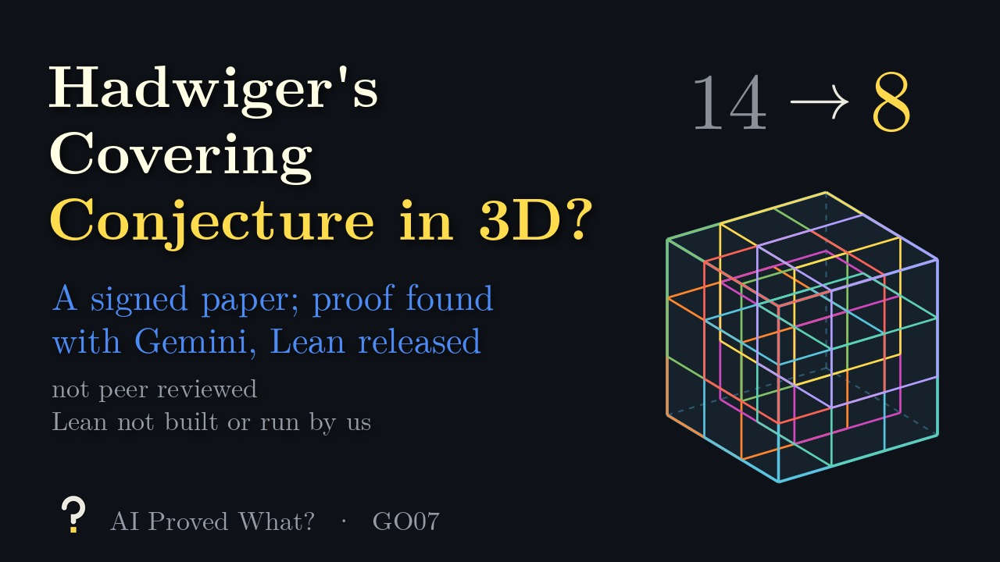
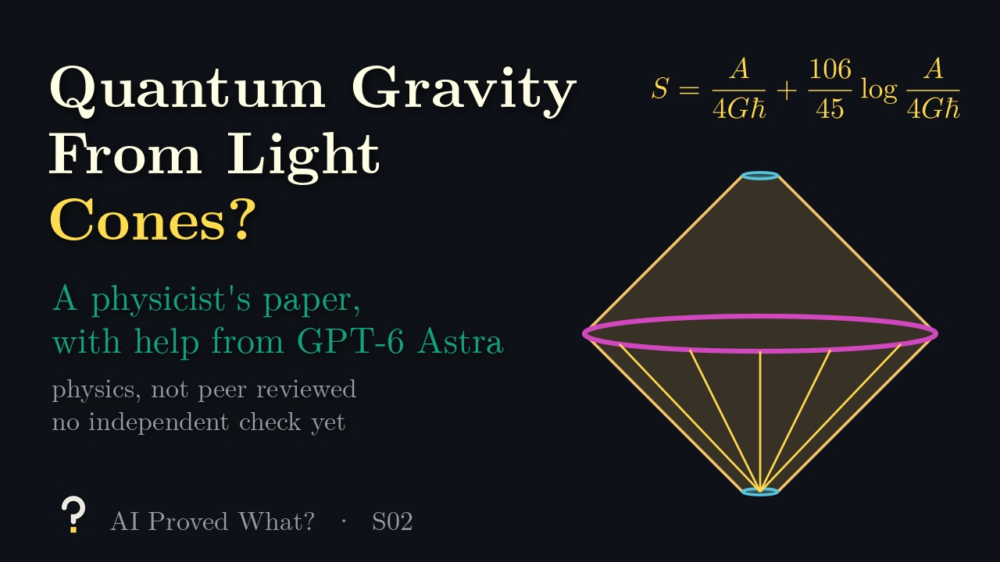
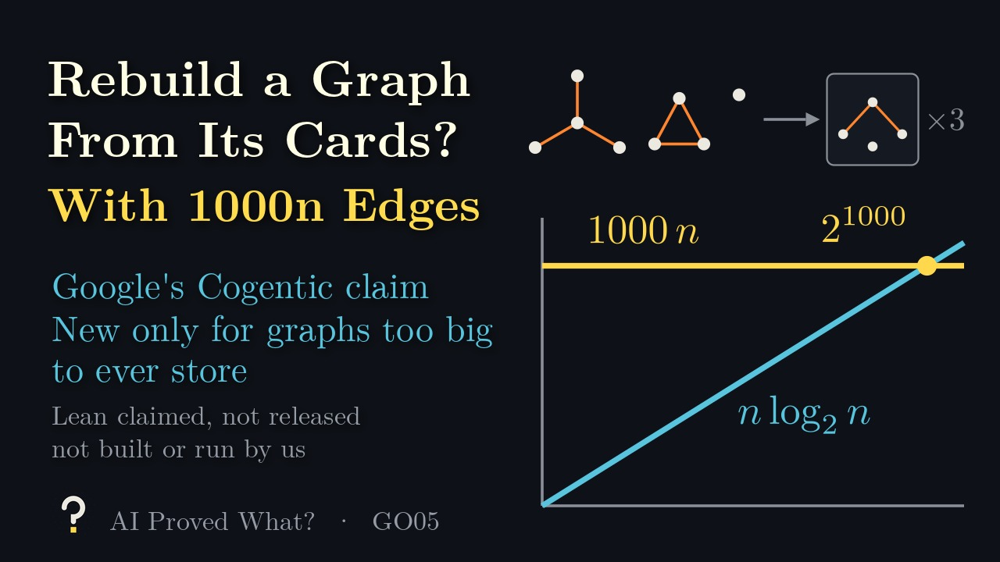
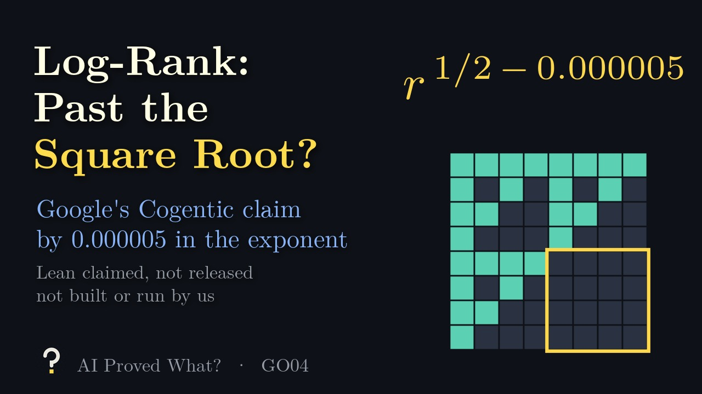
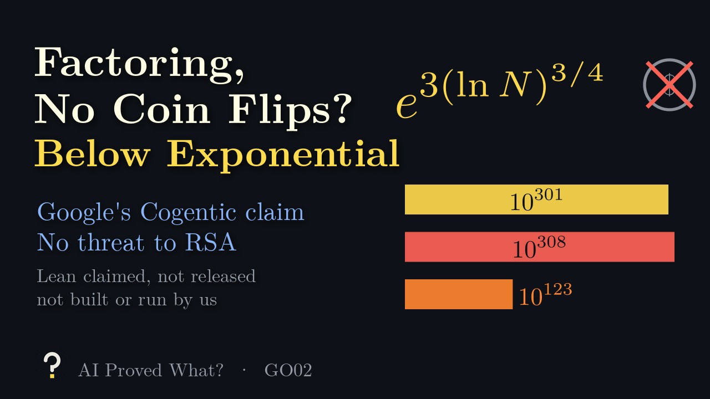
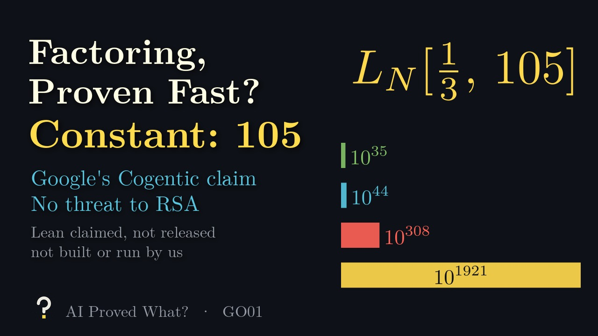

What’s new
- Specials: GO07 (Hadwiger’s covering conjecture in 3D? A signed paper, a Gemini-found proof, and its Lean). Special
An AI system claims a strongly polynomial algorithm for linear programming, answering Smale’s ninth problem, and polytopes whose diameter beats every polynomial in their facet count, disproving the polynomial Hirsch conjecture.
What does that even mean, and has anyone checked? Each episode takes one claim like this, builds the intuition with animation, and keeps a running record of how far the proof has been verified.
Episode 380: Strongly polynomial linear programming?, about 8 minutes.
Where this claim stands
- Posted as a preprint
- OpenAI, November 24, 2026
- Under expert review
- Not yet
- Peer reviewed
- Not yet
- Checked in Lean
- OpenAI published a Lean proof of part of the claim (scope notes)
Last checked November 27, 2026. The claims have not been withdrawn. Two preprints (58 and 57 pages). OpenAI published Lean proofs of rational linear programming in strongly polynomial time and of the polytope theorems (not the real-number case, quadratic programming or the games); we have not run the check, and no build log is published. Not yet peer reviewed.
Recent episodes
-

GO07 · Google · Signed arXiv paper; proof found with Gemini 4 Carbon · 9:44 Hadwiger’s covering conjecture in 3D? Hadwiger’s Covering Conjecture in Three Dimensions -

S02 · OpenAI, outside its catalogue · Researcher’s paper, made with GPT-6 Astra · 11:09 Quantum gravity from the null cone? An algebraic quantization of gravity from the null cone -
 GO06 · Google · 10:19
1/5-approximate Nash equilibria in polynomial time?
An Exact Polynomial-Time Algorithm for 1/5-Approximate Nash Equilibria in Bimatrix Games
GO06 · Google · 10:19
1/5-approximate Nash equilibria in polynomial time?
An Exact Polynomial-Time Algorithm for 1/5-Approximate Nash Equilibria in Bimatrix Games
-

GO05 · Google · 9:11 Rebuild a graph from its cards? Unconditional Edge Reconstruction of Simple Graphs of Linear Density -

GO04 · Google · 9:06 Past the square-root barrier for log-rank? Breaking the Square-Root Barrier for the Log-Rank Conjecture -
 GO03 · Google · 8:56
Discrete logarithms below quasi-polynomial time?
Discrete Logarithms in Finite Fields of Fixed Characteristic in Sub-Quasi-Polynomial Time
GO03 · Google · 8:56
Discrete logarithms below quasi-polynomial time?
Discrete Logarithms in Finite Fields of Fixed Characteristic in Sub-Quasi-Polynomial Time
-

GO02 · Google · 9:39 Factoring with no coin flips, below exponential time? Unconditional Deterministic Subexponential Integer Factoring and Quadratic Nonresidue Construction -

GO01 · Google · 8:11 Factoring in proven time L[1/3, 105]? Unconditional Integer Factorization in Time L_N[1/3, O(1)] - Episode 380 · OpenAI · 8:03 Strongly polynomial linear programming? AI preprints claim strongly polynomial linear programming and a disproof of the polynomial Hirsch conjecture
-
 Episode 379 · OpenAI · 8:15
VP ≠ VNP and Valiant’s whole hierarchy?
AI preprints claim Valiant’s whole hierarchy and near-quasipolynomial bounds for the permanent
Episode 379 · OpenAI · 8:15
VP ≠ VNP and Valiant’s whole hierarchy?
AI preprints claim Valiant’s whole hierarchy and near-quasipolynomial bounds for the permanent
-
 AN08 · Anthropic · 8:37
VP ≠ VNP over every field?
A paper credited to Claude claims VP ≠ VNP over every field
Anthropic makes Claude, which helps make this series.
AN08 · Anthropic · 8:37
VP ≠ VNP over every field?
A paper credited to Claude claims VP ≠ VNP over every field
Anthropic makes Claude, which helps make this series.
-
 AN07 · Anthropic · 8:03
The Riemann hypothesis in Lean, checked
The Riemann hypothesis in Lean, checked: what the kernels confirm (follow-up to AN06)
Anthropic makes Claude, which helps make this series.
AN07 · Anthropic · 8:03
The Riemann hypothesis in Lean, checked
The Riemann hypothesis in Lean, checked: what the kernels confirm (follow-up to AN06)
Anthropic makes Claude, which helps make this series.
Browse by subject
- Number theory31 of 31 explained
- Algebraic and complex geometry36 of 36 explained
- Real and complex analysis16 of 16 explained
- Convex and metric geometry15 of 15 explained
- Theoretical computer science43 of 43 explained
- Dynamical systems and ergodic theory12 of 12 explained
- Combinatorics37 of 37 explained
- Algebra18 of 18 explained
- Probability and statistical mechanics29 of 29 explained
- Mathematical logic6 of 6 explained
- Group theory14 of 14 explained
- Mathematical physics25 of 25 explained
- Operator algebras19 of 19 explained
- Topology18 of 18 explained
- Functional analysis11 of 11 explained
- Differential geometry29 of 29 explained
- Partial differential equations16 of 16 explained
Progress
| Lab | Claims | Explained | Lean proof published | Lean proof claimed, not public | Under expert review | Peer reviewed |
|---|---|---|---|---|---|---|
| OpenAI’s catalogue | 375 | 375 | 251 +1 | 0 | 10 | 0 |
| OpenAI, outside its catalogue | 2 | 2 | 1 | 0 | 0 | 0 |
| Axiom Math | 10 | 10 | 10 | 0 | 0 | 0 |
| PSI | 6 | 6 | 6 | 0 | 0 | 0 |
| Anthropic | 8 | 8 | 6 | 0 | 3 | 0 |
| 7 | 7 | 1 | 6 | 0 | 0 |
Lean proof published by OpenAI, OpenAI’s catalogue: 251 of 375 results: 182 of the main theorem, 69 of part of the claim; +1 by another lab (Axiom: 265), shown as +1 in the table. Under expert review, OpenAI’s catalogue: 10 results: 9 reviewed by OSVerify (002, 041, 069, 074, 086, 167, 237, 306, 340); 1 announced as under review by a named group (378). Under expert review, Anthropic: Kevin Buzzard’s outside check of AN01’s Lean code; Andrew Sutherland’s outside check of the AN06/AN07 Lean archive. Lean proof claimed, not public, Google: GO01–06. Lean proof published, Google: GO07 (by its authors, in the arXiv files). Anthropic makes Claude, which helps make this series. As of November 27, 2026.
Under expert review counts a named outside person or group who has published a review of the proof or an independent check of it, or is said to be checking it; for AN01, AN06 and AN07 these are outside checks of the Lean code.
OpenAI’s 730 papers are grouped into 375 results. A result is one main claim plus any companion papers, such as alternative proofs, supporting results or consequences, and each episode explains one whole result, all of its papers included.
Labs
OpenAI’s catalogue and the claims outside it (an OpenAI announcement and a researcher’s paper made with GPT-6 Astra), and results from Axiom Math, PSI, Anthropic and Google. Same record for every lab.
- OpenAI375 results in its catalogue, 2 outside it377 explained · Lean proof by OpenAI: 251 in its catalogue (+1 by Axiom), 1 outside it
- Axiom Math10 claims · 10 explained10 with a published Lean proof
- PSI6 claims · 6 explained6 with a published Lean proof
- Anthropic8 claims · 8 explained6 with a published Lean proofAnthropic makes Claude, which helps make this series.
- Google7 claims · 7 explained1 with a published Lean proof, 6 claimed, not public
How to read the record
Every claim gets the same four steps. A filled gold box means a step has happened; an empty box means it hasn’t yet.
- Posted as a preprint
- The proof is public
- Under expert review
- A named outside person or group has reviewed or independently checked it, or is said to be checking it
- Peer reviewed
- Refereed by mathematicians
- Checked in Lean
- Verified step by step by computer
Posted as a preprint means the lab has released a written proof anyone can read. That’s where a claim starts, not where it ends. A claim announced before its paper is public reads Announced, paper not public instead. Under expert review is filled when a named outside person or group has published a review of the proof or an independent check of it (so far OSVerify (a Stanford verification project) for OpenAI’s catalogue, Kevin Buzzard’s outside check of AN01’s Lean code, and Andrew Sutherland’s outside check of the AN06/AN07 Lean archive; a review is not a certification), shown as a blue box when a lab names a group that will review it (we quote who said so), and left empty otherwise. Peer reviewed means independent mathematicians have refereed it, usually for a journal. Checked in Lean means the main result has been verified by Lean, a computer program that accepts a proof only when every step is justified.
When a published Lean proof (OpenAI’s or another lab’s) covers only part of a claim, a half-filled box marks it, on episode pages and in lists, and the record says what is covered.
If a claim is withdrawn, its box turns red and the episode stays up, clearly marked. Mistakes are part of the story.